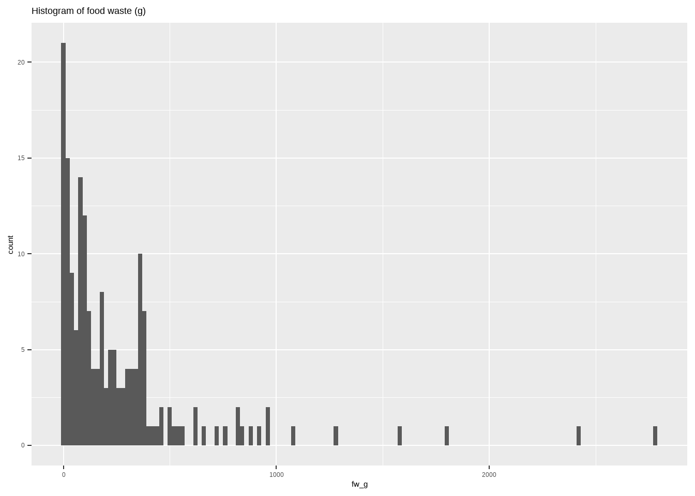
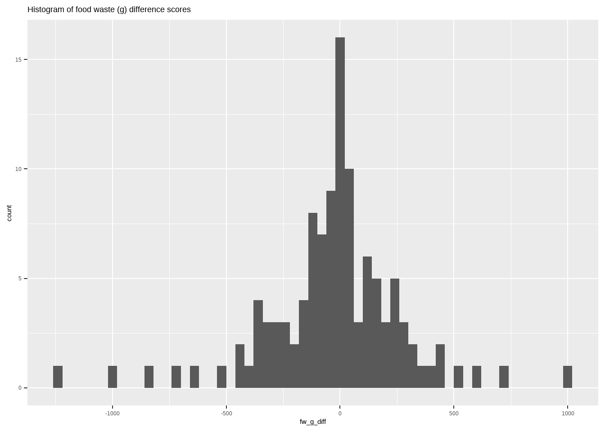
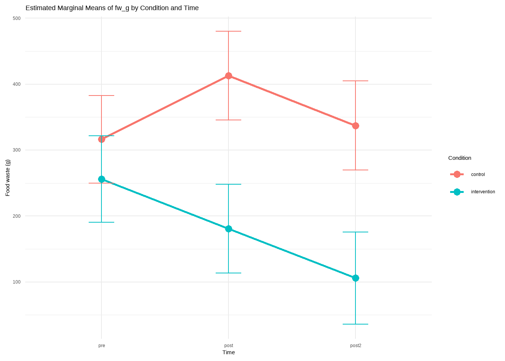

| intervention (N=32) |
control (N=31) |
Overall (N=63) |
|
|---|---|---|---|
| Gender | |||
| Female | 25 (78.1%) | 22 (71.0%) | 47 (74.6%) |
| Male | 6 (18.8%) | 7 (22.6%) | 13 (20.6%) |
| Other | 1 (3.1%) | 2 (6.5%) | 3 (4.8%) |
| Age | |||
| Mean (SD) | 20.4 (2.01) | 20.8 (2.16) | 20.6 (2.08) |
| Median [Min, Max] | 20.0 [18.0, 26.0] | 20.0 [18.0, 27.0] | 20.0 [18.0, 27.0] |
| Household size | |||
| Mean (SD) | 6.28 (5.08) | 7.10 (5.64) | 6.68 (5.34) |
| Median [Min, Max] | 5.00 [2.00, 26.0] | 5.00 [2.00, 25.0] | 5.00 [2.00, 26.0] |
| Baseline waste | |||
| Mean (SD) | 256 (292) | 316 (428) | 286 (364) |
| Median [Min, Max] | 180 [1.00, 1270] | 165 [0, 1800] | 179 [0, 1800] |
YRM Data Overview
Sample Characteristics
Descriptives
It looks like food waste is going down for the intervention group but not the control group.
Show R script
tall$time <- factor(tall$time)
tall3$time <- factor(tall3$time, levels = c(0,1,2,3), labels = c("pre", "post", "follow-up","final"))
tall %>%
group_by(condition, time) %>%
summarise(
n=n(),
mean=mean(fw_g),
sd=sd(fw_g)
) %>%
mutate(se = sd/sqrt(n)) %>%
mutate(ci=se*qt((1-0.05)/2 + .5, n-1)) %>%
ggplot(aes(x = time, y = mean, fill = condition)) +
geom_bar(stat = "summary", fun = "mean", position = "dodge") +
labs(title = "Food waste (g) over time by condition",
x = "Time",
y = "Food Waste (g)",
fill = "Condition") +
theme(plot.title = element_text(size =16, family = "Arvo"),
axis.title = element_text(size = 14, family = "TT Arial"),
axis.text = element_text(size = 12, family = "TT Arial"),
legend.title = element_text(size = 14, family = "TT Arial"),
legend.text = element_text(size = 12, family = "TT Arial"),
axis.line = element_line(colour = "darkgray", size = 1, linetype = "solid"),
panel.background = element_rect(fill = "transparent"),
panel.grid.major = element_line(size = .05, linetype = "solid", colour = "grey")) +
scale_y_continuous(expand = c(0, 0), limits = c(0,450)) +
scale_fill_brewer(palette = "Pastel2")
Bar plots
But food waste always has a distribution with very many 0s and right-skew. However, the difference scores of food waste are normally distributed.
Show R script
ggplot(tall, aes(x = fw_g)) +
geom_histogram(binwidth = 20)+
labs(title = "Histogram of food waste (g)")
Show R script
ggplot(tall, aes(x = fw_g_diff)) +
geom_histogram(binwidth = 40)+
labs(title = "Histogram of food waste (g) difference scores")Warning: Removed 63 rows containing non-finite values (`stat_bin()`).
Inferential statistics
if I just continue the analysis as is, using a mixed model, I get the following results.
A significant interaction for time*condition. And a significant decrease in food waste for the intervention group from pretest to the second post test.
Show R script
fw_lmer <- lmer(fw_g ~ condition*time + (1|id), data = tall)
flextable(Anova(fw_lmer, test.statistic = "F") %>% rownames_to_column(var = ".")) %>% colformat_double(digits = 3). | F | Df | Df.res | Pr(>F) |
|---|---|---|---|---|
condition | 4.053 | 1.000 | 60.814 | 0.049 |
time | 1.796 | 2.000 | 110.861 | 0.171 |
condition:time | 3.123 | 2.000 | 110.939 | 0.048 |
Show R script
fw_lmer_em <- emmeans(fw_lmer, specs = ~ condition | time)
cont_time <- contrast(fw_lmer_em, method = "pairwise", by = "condition")
flextable(tidy(cont_time)) %>% colformat_double(digits = 3)condition | term | contrast | null.value | estimate | std.error | df | statistic | adj.p.value |
|---|---|---|---|---|---|---|---|---|
control | time | pre - post | 0.000 | -96.523 | 55.147 | 109.508 | -1.750 | 0.191 |
control | time | pre - post2 | 0.000 | -20.728 | 55.819 | 109.856 | -0.371 | 0.927 |
control | time | post - post2 | 0.000 | 75.795 | 56.476 | 110.248 | 1.342 | 0.375 |
intervention | time | pre - post | 0.000 | 75.338 | 55.942 | 111.940 | 1.347 | 0.373 |
intervention | time | pre - post2 | 0.000 | 149.992 | 59.055 | 113.204 | 2.540 | 0.033 |
intervention | time | post - post2 | 0.000 | 74.654 | 59.449 | 110.674 | 1.256 | 0.423 |
Show R script
fw_lmer_em_df <- as.data.frame(fw_lmer_em)
ggplot(fw_lmer_em_df, aes(x = time, y = emmean, color = condition, group = condition)) +
geom_point(size = 3) +
geom_line(size = 1) +
geom_errorbar(aes(ymin = emmean - SE, ymax = emmean + SE), width = 0.2) +
labs(title = "Estimated Marginal Means of fw_g by Condition and Time",
x = "Time",
y = "Food waste (g)",
color = "Condition") +
theme_minimal()Warning: Using `size` aesthetic for lines was deprecated in ggplot2 3.4.0.
ℹ Please use `linewidth` instead.
The main results for ANOVA are a bit different and these again differ from results of a RM ANOVA in SPSS. This one also has a significant interaction, but it is stronger.
Show R script
fw_aov <- anova_test(dv = fw_g, wid = id, within = time, between = condition, data = tall)
flextable(fw_aov$ANOVA) %>% colformat_double(digits = 3)Effect | DFn | DFd | F | p | p<.05 | ges |
|---|---|---|---|---|---|---|
condition | 1.000 | 51.000 | 3.185 | 0.080 | 0.049 | |
time | 2.000 | 102.000 | 2.931 | 0.058 | 0.010 | |
condition:time | 2.000 | 102.000 | 5.818 | 0.004 | * | 0.020 |